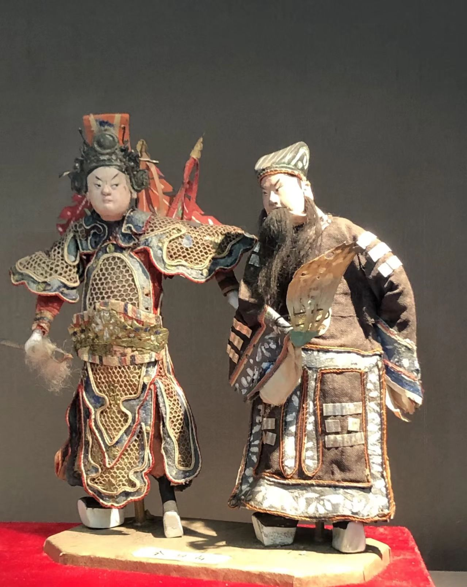
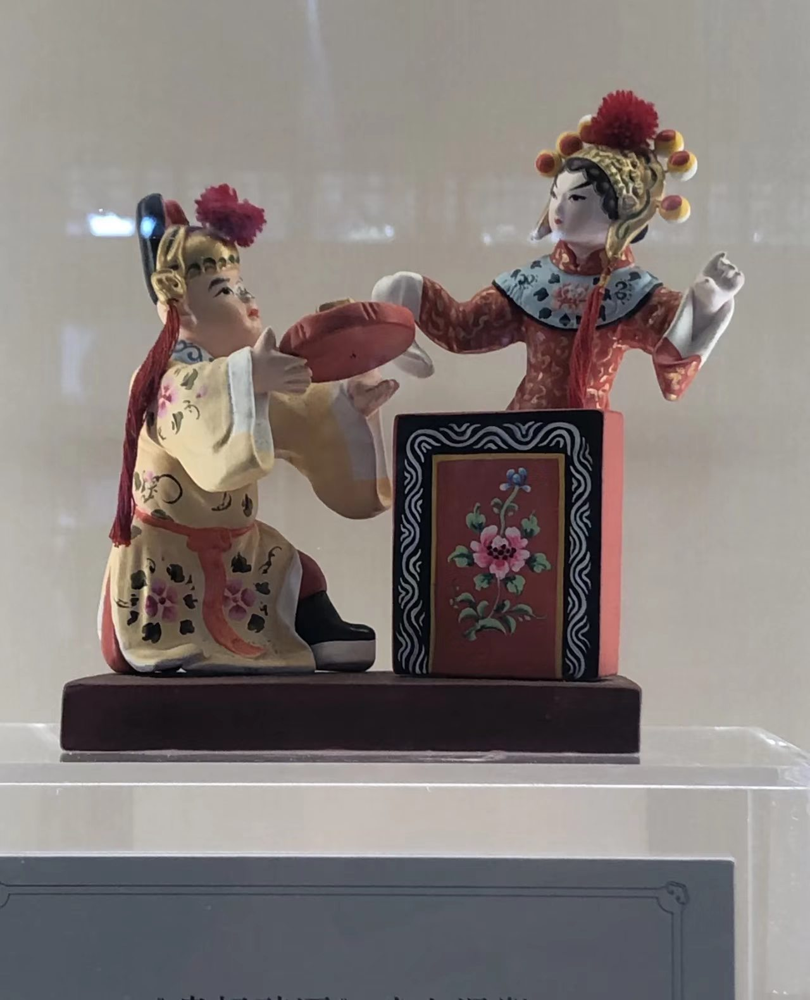
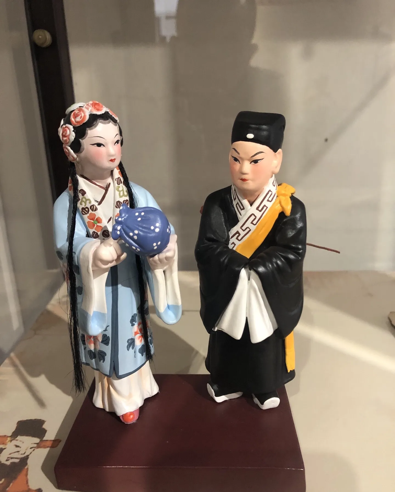
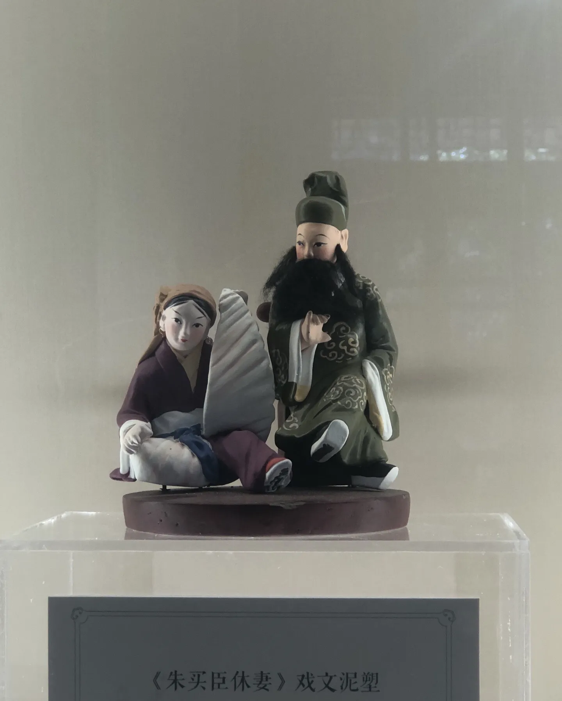

📸 主图介绍
经典天津泥人张民俗泥塑作品，选用天然河泥经反复捶打、醒泥后手工塑造，矿物颜料多层上色，人物神态生动鲜活。泥塑根植民间市井，题材取自戏曲、民俗、孩童嬉戏，是接地气、群众基础极广的传统造型手工艺。
民间泥塑精品作品数字画廊

古典戏曲人物泥塑

市井民俗生活场景泥塑

传统瑞兽吉祥泥塑摆件

国潮IP现代创意泥塑
🖼️ 四幅作品数字化解析
四张图片完整覆盖泥塑四大创作赛道：古典戏曲人物、市井民俗场景、传统吉祥瑞兽、国潮现代文创。横向对比直观展示三大流派工艺差异：天津泥人张写实细腻、惠山泥人圆润喜庆、凤翔泥塑粗犷浓烈，完整呈现泥塑七千余年风格迭代脉络。
民间泥塑非遗数字化科普音频
涵盖起源、三大流派、古法塑造工艺、现代文创数字化转型全维度讲解
💡 数字化收藏小贴士
传统天然泥土泥塑极易风干开裂、受潮软化、虫蛀破损，高清扫描+3D数字建模存档可永久保存；古法手工泥塑收藏价值远高于工业量产软陶；现代轻量化树脂、数字盲盒周边已解决传统泥塑保存难、运输易损坏的行业痛点。
💬 用户数字化留言交流区